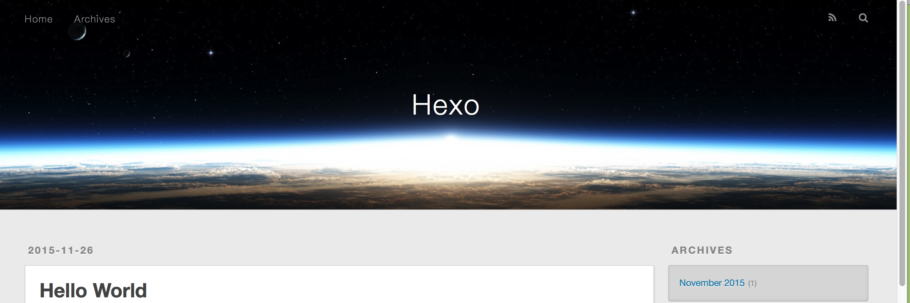

创建博客主要有四步（以windows为例）：
1、安装node.js环境–hexo运行需要基于node环境
2、安装hexo
3、安装git客户端–方便的执行一些git命令
4、创建github仓库–用于作为发布博客的服务器
第一步：安装node.js环境
进入官网(https://nodejs.org/en/)下载安装包，直接点击安装即可,安装完后，运行node -v如下即表示安装成功
第二步：安装hexo
第一步环境配置成功以后就可以使用npm安装Hexo了，建议使用淘宝镜像cnpm，速度要快很多npm install -g hexo-clinpm install hexo --save
然后在本地目录创建一个文件夹,比如我创建的是一个hexoBlog文件夹
然后cd到hexoBlog文件夹，然后依次执行下面的命令hexo initnpm install
我当时执行命令的时候报错hexo不是内部命令
是因为没有默认设置环境变量，以前安装以后都会默认设置好环境变量，这次并没有默认设置好，不知道为什么，只需要设置一下hexo的环境变量即可，一般的位置是C:\Users\stone\AppData\Roaming\npm\node_modules\hexo\node_modules\.bin
一切都设置完毕以后，启动本地Hexo服务
执行命令hexo server
打开浏览器，输入http://localhost:4000/ 出现下图，恭喜你，你已经成功了一大步！

第三步 安装git客户端
这一步比较简单，不详细描述，搜索git客户端下载，一路next安装，完成后
桌面鼠标右键会出现：
Git GUI Here 这个是可视化操作界面，我一般不怎么用
Git Bash Here 这个是命令行操作，这个用的比较多
说明安装成功了，待用
第四步 创建github仓库
进入github官网(http://www.github.com)
首先你得有一个github账号（手动滑稽）,没有的话就先注册，简单，不描述，注册后创建一个的仓库，用于存放博客
如下图：
仓库的名称必须是github名字.github.io，这个要注意
创建完仓库以后，就要配置SSH，这个是用来远程连接你的github账户的，有一个公钥和私钥
方法如下：
打开第三步安装的Git Bash Here
执行命令ssh-keyge 回车生成SSH，如果要设置了密码，每次提交github仓库时都要输入密码，不设置的话不用输入
说明创建成功！
一般存在于C:\Users\用户.ssh下，会出现两个id_rsa文件，打开id_rsa.pub文件，这里面就是SSH key的内容
打开你的github,右上角头像，点击Setting，然后选择SSH and GPG keys，点击右边Add SSH
然后把复制的SSH key内容粘贴到下面那个框里面，title随便自己写
过程可能会让你输入一次密码，输入即可！
配置好就行了
这里要注意，复制的一定是.pub的文件里的内容，我第一次就复制错了，复制了第一个私钥的内容，结果报错：
GitHub添加SSH keys报错Key is invalid. It must begin with ‘ssh-ed25519’, ‘ssh-rsa’, ‘ssh-dss’, ‘ecdsa-sha
判断SSH是否配置好，用git bash 命令行输入
ssh -T git@github.com
出现Hi heystone! You’ve successfully authenticated, but GitHub does not provide shell access. 就表示你已经配置好了SSH
SSH配置好了，进行下一步
配置本地hexo仓库地址
打开Hexo目录下的_config.yml，最下面deploy:
type: git
repository: https://github.com/heystone/heystone.github.io.git
branch: master
repository配置为你的github仓库的地址，注意，：后又一个空格，这个很重要，第一次我没写空格，死活都提交不上去，也不报错，各种抓狂
发布博客到github
依次执行下面的命令hexo clean
清理缓存hexo g
编译博客hexo d
发布到github仓库
我发布的时候出现这个问题，按照指示设置一下注册github的邮箱和github用户名即可，中间要输入一次密码
如果出现下图既证明已经没有出现问题
如果成功的话在浏览器输入(http://heystone.github.io) 就可以访问你的博客了。把用户名换为你自己的。
如果发布的时候出现错误：ERROR Deployer not found: git 意思就是用来发布文章的git没有安装，执行命令 npm install hexo-deployer-git –save就可以解决了
好了，一切都大功告成了，后期可以申请一个自己的域名，我目前还没申请，申请以后再搞一下配置
完成以后，你们就可以尽情折腾自己的博客啦
最后更新： 2018年08月01日 23:42
原始链接： http://yoursite.com/2018/08/01/手把手教你如何用hexo和github搭建博客/